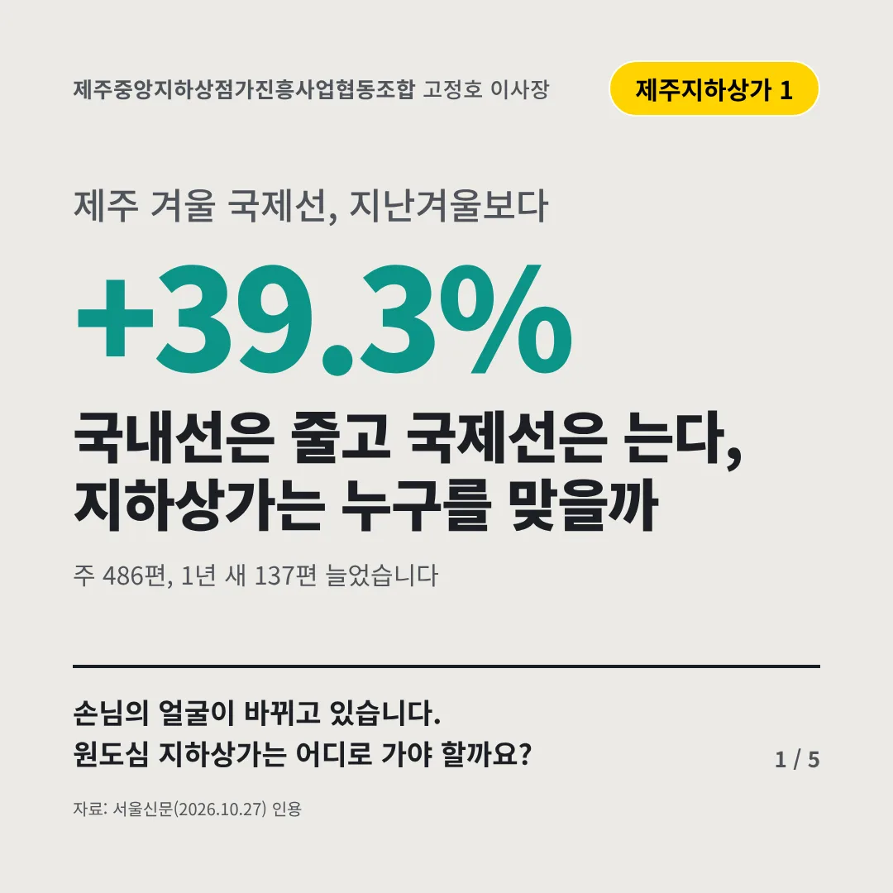
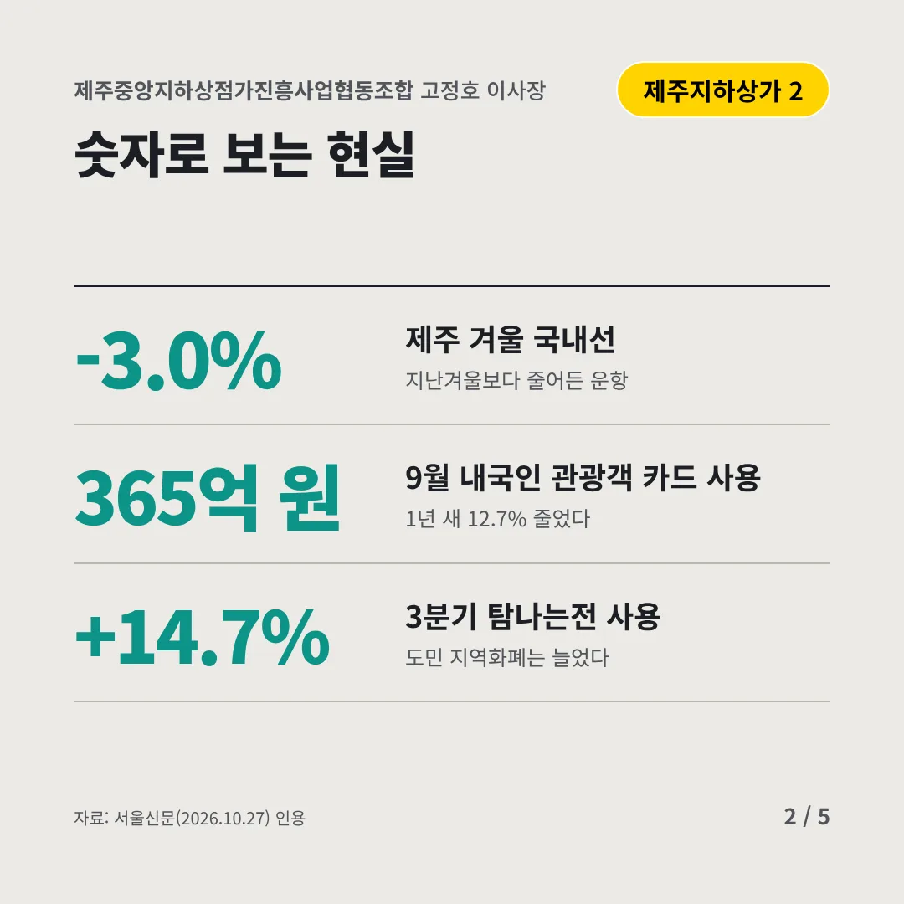
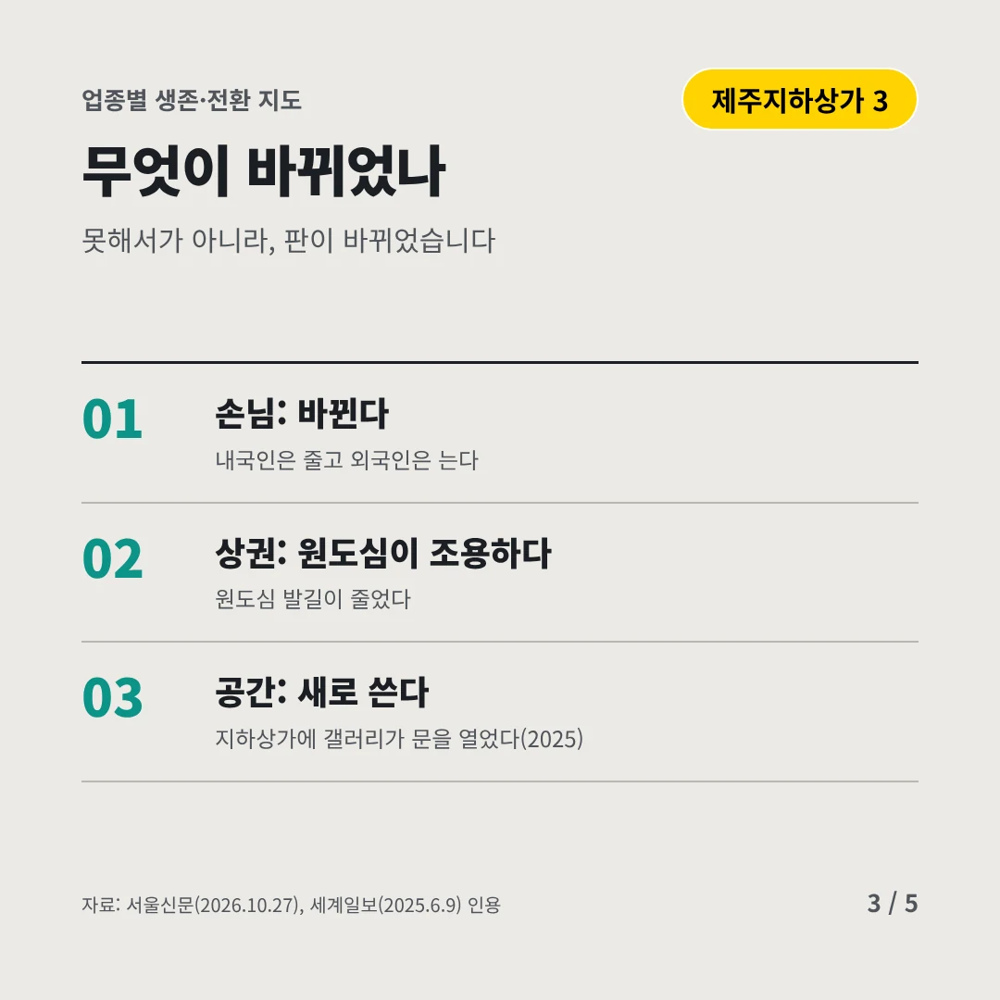
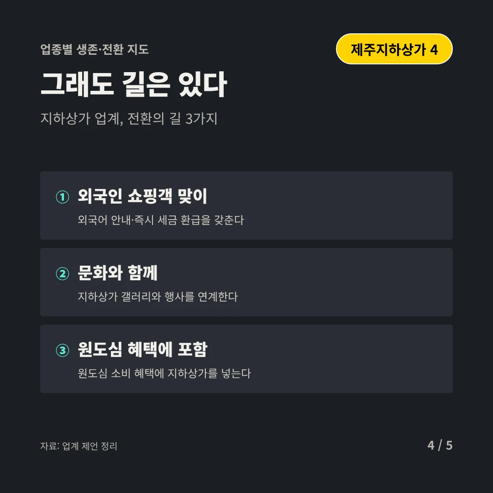
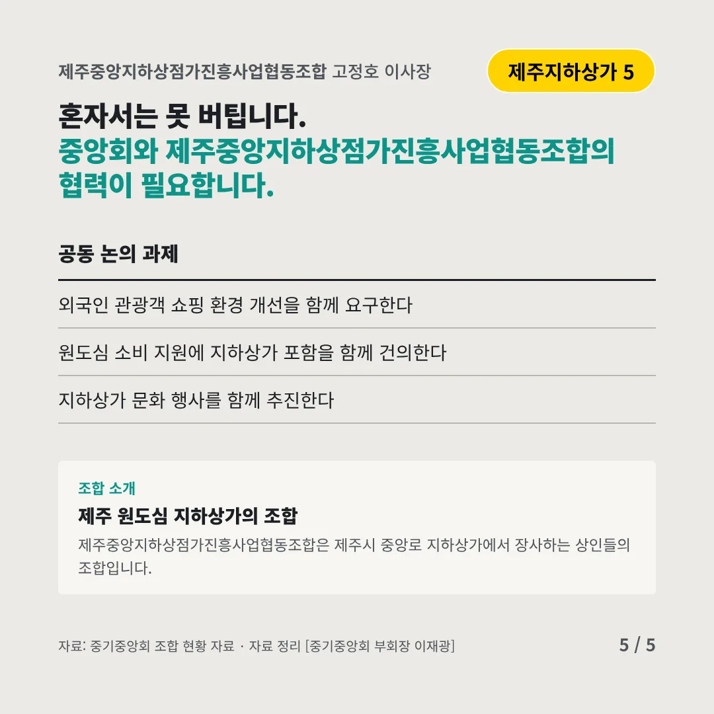
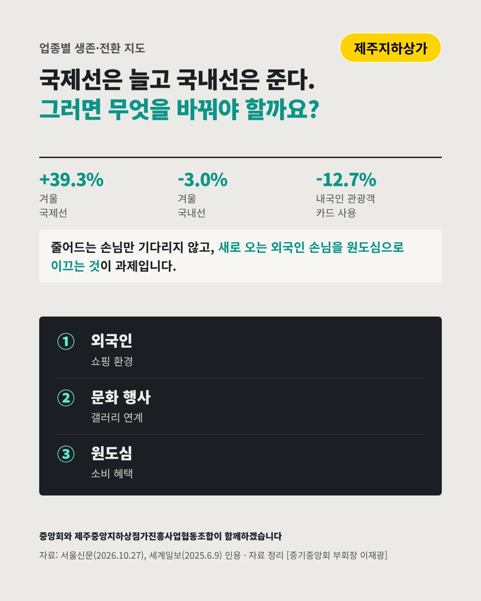

제주중앙지하상점가진흥사업협동조합
국내선은 줄고 국제선은 는다, 지하상가는 누구를 맞을까
+39.3% 제주 겨울 국제선, 지난겨울보다






손님의 얼굴이 바뀌고 있습니다. 원도심 지하상가는 어디로 가야 할까요?
숫자로 보는 현실
- -3.0%제주 겨울 국내선지난겨울보다 줄어든 운항
- 365억 원9월 내국인 관광객 카드 사용1년 새 12.7% 줄었다
- +14.7%3분기 탐나는전 사용도민 지역화폐는 늘었다
무엇이 바뀌었나
- 손님: 바뀐다내국인은 줄고 외국인은 는다
- 상권: 원도심이 조용하다원도심 발길이 줄었다
- 공간: 새로 쓴다지하상가에 갤러리가 문을 열었다(2025)
그래도 길은 있다
- 외국인 쇼핑객 맞이외국어 안내·즉시 세금 환급을 갖춘다
- 문화와 함께지하상가 갤러리와 행사를 연계한다
- 원도심 혜택에 포함원도심 소비 혜택에 지하상가를 넣는다
한 장 요약

조합 소개
제주중앙지하상점가진흥사업협동조합은 제주시 중앙로 지하상가에서 장사하는 상인들의 조합입니다.
자료: 서울신문(2026.10.27), 세계일보(2025.6.9)